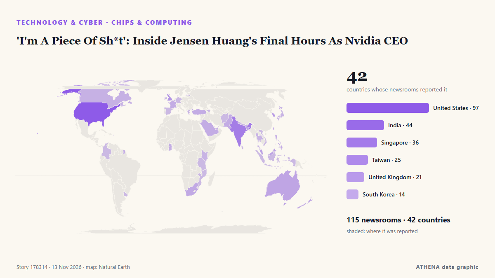

Τεχνολογία, ΤΝ & Κυβερνοασφάλεια
ΧορηγούμενοΠαρουσιάζεται από  Cybernetics and Artificial Intelligence Lab Welcome to the Cybernetics and Artificial Intelligence Laboratory, established at the Department of Business Administration of the National and Kapodistrian University of Athens. The lab is headed by Professor Dimitrios Thomakos. The lab aims to do research that can be published in top venues. Our research uses tools and methods of Artificial Intelligence, and lies in the following areas: - Forecasting - Decision making - Cyber security - Finance We are always looking forward to collaborating with exceptional students!
Cybernetics and Artificial Intelligence Lab Welcome to the Cybernetics and Artificial Intelligence Laboratory, established at the Department of Business Administration of the National and Kapodistrian University of Athens. The lab is headed by Professor Dimitrios Thomakos. The lab aims to do research that can be published in top venues. Our research uses tools and methods of Artificial Intelligence, and lies in the following areas: - Forecasting - Decision making - Cyber security - Finance We are always looking forward to collaborating with exceptional students!
Οι τίτλοι των ειδήσεων παρουσιάζονται στα αγγλικά, όπως δημοσιεύτηκαν.

Επεξεργαστές & υπολογιστική'I'm A Piece Of Sh*t': Inside Jensen Huang's Final Hours As Nvidia CEO
Shares of Nvidia's major Taiwanese manufacturing partners rose on Monday despite mounting concerns over CEO Jensen Huang's future, suggesting that investors have yet to price in significant… από DigiTimes Asia
| 1 Νοε | 48 |
|---|---|
| 2 Νοε | 111 |
| 3 Νοε | 102 |
| 4 Νοε | 99 |
| 5 Νοε | 112 |
| 6 Νοε | 54 |
| 7 Νοε | 37 |
| 8 Νοε | 42 |
| 9 Νοε | 103 |
| 10 Νοε | 114 |
| 11 Νοε | 82 |
| 12 Νοε | 72 |
| 13 Νοε | 74 |
| 14 Νοε | 6 |
SpaceX launches Starship on ambitious 22-hour Flight 15 test, but aborts booster 'chopsticks' catch (video)
SpaceX's Starship megarocket reached orbit today (Nov. από Space.com
Microsoft 365, Outlook, and Teams Hit by Global Outage Lasting Nearly 20 Hours
The global Microsoft outage continues to cause disruptions in several countries, as nearly 20 hours have passed since the first reports of service failures emerged. από Colombia One
Microsoft apologises for global outage as UAE Outlook users see recovery
UPDATED with latest company comments: Earlier this evening Microsoft posted an update on the outages to its 365 platform noting “positive results with our efforts to restart affected infrastructure… από Deadline
Microsoft 'deeply sorry' as outage triggers global chaos
Microsoft apologised for a global outage affecting 74 countries, reporting a "broad recovery" of its services and confirming that the disruption was caused by a "technical issue not related to cyber… από CNA (Channel NewsAsia)
Microsoft says consumer products 'fully recovered', business services improving
Resolution seems in sight on Saturday following confirmation by tech giant Microsoft on Friday that services had fully recovered across Teams, Outlook, Copilot and other applications, ending a… από France 24 English
Microsoft’s global outage and fixes: What we know
The company described “encouraging” progress on efforts to overcome a second day of disruptions to its email, messaging and other services. από The New York Times (World)
'Deeply sorry': 24 hours after global Microsoft outage, tech giant issues apology
Microsoft has apologised after a global outage disrupted its Teams, Outlook and Copilot services for nearly 24 hours, affecting businesses and users across more than 70 countries. από Deccan Herald
$400 Million In 18 Months: How North Korean Hackers Stole Money Using Images
The targets are issued invitations from genuine contacts they have previously interacted with, but whose social media and communication accounts have been compromised and whose images have been… από NDTV
It’s looking like Trump’s first term again as knives come out at the White House over Nvidia scandal
The backbiting and leaking that characterized Trump’s first term is back in full force - and this time Commerce Secretary Howard Lutnick appears to be the target, White House Correspondent Andrew… από The Independent
Who is Alice Huang? The businesswoman linked to Jensen Huang and Nvidia
As espionage targets go, Jensen Huang is perhaps one of the least surprising on Earth. από The Verge
Jensen Huang Misled Top Nvidia Officers About Affair With Chinese Spy: Report
On Thursday, Jensen Huang resigned as Nvidia CEO, a spectacular fall from the chip industry's heights where he was a pioneer of technology central to the recent boom in artificial intelligence. από NDTV
Microsoft Races to Fix Outlook in One of Its Longest Outages
Microsoft Corp. is struggling to restore access to its flagship software and end an outage that has paralyzed government offices, traders and businesses globally. από Insurance Journal
Bessent Blames Lutnick’s Commerce Department for Not Restricting Nvidia Chips to China
Treasury Secretary Scott Bessent said Friday he was frustrated with the Commerce Department’s delay in implementing restrictions over the export of certain Nvidia chips to China. από The National Herald
SpaceX to attempt to catch its first Starship on land in 15th flight
SpaceX's latest Starship flight planned for Friday will include its first attempt to catch the spacecraft at its Texas launch site, rather than discarding it in the ocean — a key test of Elon Musk's… από CBC News (alternative feed)
Nvidia is done with Jensen Huang. The fallout in Washington is just beginning
Jensen Huang's 33-year tenure as the CEO of chip-making giant Nvidia is now finished, but the political repercussions of his affair with an alleged Chinese spy are only just beginning. από CBC News (alternative feed)
Amazon’s plan to own the world’s product data and fight AI shopping agents
Amazon's World Product Graph aims to collect data on nearly every product sold worldwide. από Express Tribune
Jensen Huang, US Commerce Secretary Lutnick summoned to testify on Capitol Hill in push for Nvidia inquiry
Senior White House officials are separately discussing whether Lutnick should be pushed out. από The Business Times
Malaysia investigates AI chips linked to the firm in Nvidia’s spy scandal
New image reveals the extent of the relationship between Alice Huang and Nvidia boss Jensen Huang, as the revelation of their relationship highlights human vulnerabilities of AI kingmakers. από Sydney Morning Herald
Nvidia scandal: Scott Bessent blames Commerce over Megaspeed blacklist failure
Megaspeed reportedly traded more than US$4b worth of Nvidia chips in two years. από New Zealand Herald
China’s access to some Nvidia chips in doubt as curbs gain traction in US
Chinese AI shares tumbled on Friday, as investors worried that Jensen Huang's departure as Nvidia NVDA.O CEO could further restrict Chinese access to advanced US chips, deepening the technology… από Daily Maverick
From Taiwan to Thailand
Lakeshore Restaurant: Where Tradition Meets Contemporary DiningOur journey to explore Taiwan's exquisite cuisine began on a delightful note with an eight-course lunch at Lakeshore... από Arab Times
US lawmakers summon Nvidia ex-CEO after affair with suspected spy
The scandal has wiped almost half a trillion dollars off Nvidia's market valuation, as it raises national security fears and leaves the AI industry in uncharted waters. από Channels TV
When will Outlook and Microsoft 365 be back up? Tech giant says it’s seeing ‘signs of stabilisation’
Microsoft’s executive vice-president Charles Lamanna said the global outage problem is being worked on with ‘urgency’ από Evening Standard (London)
EU leaders to hold first ever talks on AI in Dublin
The EU seeks to strengthen its position in the global AI race while protecting people and businesses from the technology's potential dangers. από Free Malaysia Today
Microsoft crisis: What we know about the 365 outage
Microsoft has said that the fixes implemented to resolve the crisis have not worked as expected. από Arabian Business
Missing teen found alive after 6 days in the Australian woodlands
A 17-year-old boy with autism was found alive Thursday after six days lost in eastern Australian woodlands. από CBC News
Former Nvidia CEO Huang had a relationship with a second employee, sources say
Oliver Farry is pleased to welcome Bernard Benhamou, Secretary General of France's Institute of Digital Sovereignty. από France 24 English
CPJ welcomes conviction of 2 Iranians who spied on journalists in the UK
London, November 13, 2026—The Committee to Protect Journalists welcomes the conviction on Thursday of two Iranian men found guilty of spying on London-based journalists working for Iran… από Committee to Protect Journalists
Microsoft investigates reports of Outlook mailbox access problems
The outage is affecting Microsoft 365, including cloud-based services like Outlook and Cop. από BusinessDesk
Anthropic targets valuation of up to $1.4 trillion for blockbuster IPO
OPINION: New Zealand investors may be limited to specified wholesale categories. από New Zealand Herald
Egyptian court postpones retrial of independent news site’s editor
CAIRO, Nov 11 - An Egyptian court on Wednesday postponed until November 18 a retrial of the editor-in-chief of Mada Masr, a prominent independent news site, on charges of publishing false news and… από The Straits Times
SpaceX, Tesla merger talks progress
NEW YORK: SpaceX and Tesla are progressing in their merger negotiations, and a deal could be announced as early as December, Bloomberg News reported on Thursday, citing people familiar with the… από New Straits Times
Nvidia CEO Jensen Huang drops from world’s top 10 richest after chips sell-off
Nvidia CEO Jensen Huang warned that Europe risks falling further behind the US and China in artificial intelligence, despite its industrial base and technical talent. από DigiTimes Asia
Maersk Confirms Data Theft Amid $5 Million Extortion Attempt
The WhiteArmor ransomware group claims it stole 100GB of data from the shipping giant’s systems. από SecurityWeek